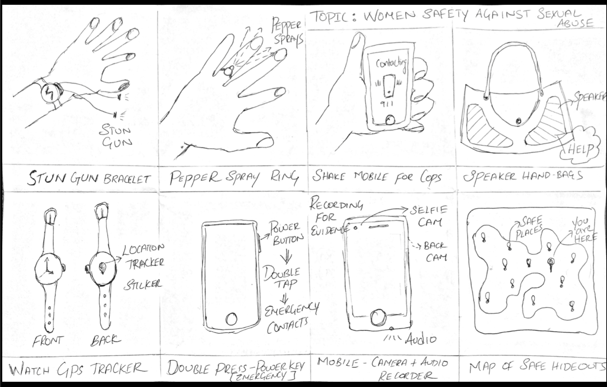

Rakshaa
A mobile application for helping women in India find resources faster during times of need
Overview
The Problem
The inability for Women in India to find a reliable solution that provides timely resources during an emergency such as stalking or sexual harassment.
Scale of Problem
Stalking and sexual harassment is a global problem for women and men alike. The #MeToo movement reached 85 Countries with 1.7M Tweets
Design Philosophy
"I am not my User" - This was something I was aware of throughout my design process
My Contribution
This was an Individual project from start to finish.
My Design Process

Discovery
# Market Research
How?
A Market research was performed to identify solutions currently available in the market dealing with women safety. Research was performed on mobile, web and physical products available in the market. A SWOT analysis of the various services and features was performed to identify opportunities and features that would make up the value proposition for the application.
Learning?
- The Competitive Analysis helped me figure out the missed opportunities in the market
- The User Reviews in the App store helped me perform a preliminarily need assessment and emotion coding
- False positives were a major deterrent for the users to use the application - threats
# Interviews
Why?
- To understand the needs, emotions and personal experience of the users
- To evaluate their current choice of solution
- To define a problem in the voice of the user
Findings
- Stalking occurs all the time as opposed to my perception of the occurance being concentrated at night.
- Most of the users carry a pepper spray but are afraid to use them because they feel that the situation might escalate or they might be wrong about the person
- Current solutions in the market are hard to use and has many false triggers
- An ideal solution does not exist. Many felt that to completely stop stalking, a combined effort of social responsibility, law enforcement and technology should be in place
- Users felt indifferent towards a wearable or other devices that needs to be charged to be carried around in addition to their mobile devices
# Personas
Following the interviews, I created 5 personas and 1 anti-persona to help personify the problem from a user's context. This also helped me in viewing the problem from the point of view of various stake holders. I also created an anti-persona to be cognizant of the type of users who will not be using this application.
# Defining the Problem
How might we help women in India feel safe by providing timely resources and actionable choices that are easy to use.
Ideation
# Sketching
Taking the results of the secondary research further, I sketched 8 unique ideas creating digital and physical solutions to the problem definition which was later iterated and presented to the target users and other designers to get some feedback on.
The objective of this excersise was to come up with multiple unique solutions to solve the problem without any constraints or validating any assumptions. This excersise can be thought as a moodboard for further iteration and validation where ideas were later eliminated after feedback from users.
# Storyboards & Interaction Walkthroughs
The 8 concepts where developed further to illustrate a user story. Each storyboard consists of a minimum of 5 sketches/steps adding up to 40 sketches in total. The storyboard is a simplified user journey map illustrating how the users will use the solution.
The objective of this activity was to get a glimpse of the User Experience even before prototyping solutions. This activity also accentuated how crazy few solutions were to be practical.
# Participatory Design & Feedback
Why this?
Now that the target users, problem statement and initial brainstorming is done, it is time to get some feedback from the users by showing them the sketches. I took the approach of a participatory design exercise with the users so that they felt comfortable selecting ideas and working with me to make changes they felt was needed.
The Value of this exercise?
- When users started to design along with me, they felt comfortable talking about features they liked and hated
- Card sorting excersise at the end helped me in understanding the mental model of the users and their expectations
What did I learn?
- The users felt that a dedicated wearable devices are either left behind at home or is not ideal due to extra steps involved in charging and maintaining the device.
- A wearable device also means that it needs to replace existing devices the users might already have (Eg. Apple watch, Fitbit, etc)
- Preferred a mobile application that is easy to use and have functionalites that do not trigger false alerts often
Prototyping and Validation
# QOC (Questions, Options & Criteria) Analysis - Decision Making
Why?
QOC was created to analyse few design decisions that needed to be made in representing a functionality on the mobile application. The general structure of a QOC follows a design Question to be evaluated
given the choices and evaluation criteria.
The following Questions needed to be analysed
- Representation of Safe Locations
- Navigation mode
- Communication with Friends/Family
- Login choices
Decisions
- A Map view was selected as default which will be replaced by a text/audio when battery was low
- Directions on the map is provided by default with options to hire a cab from within the app
- Text messages to be sent by default and calls to selected contacts
- Options to connect with social network presented at login with benifits indicated and privacy notices provided
# Low Fidelity Paper Prototype
If in doubt test! test! test!
A Low Fidelity paper prototype of the application mockup was created using index cards and post-its and were used to coduct a prelimary user testing. An informal Guerrilla usability testing was conducted on people followed by a brief conversation with them regarding the features they liked and features they wished was better
User Testing and Iteration
The prototype was tested with 3 target users and 2 general audience to get a holistic view about the interactions and usability. Each participant was given a task to perform without any guidance and were asked to think out loud. The user interactions and the body language was observed and follow-up questions were asked to understand the users mental model
The design was iterated over the feedback to fix small usability problems
Final Solution
Based on user feedbacks the wireframes were reiterated to address the problems and concerns the users had while navigating the application. The final design looks like this!
High Fidelity Prototype
Interactive Prototype
The protoype was designed in invision and can be accessed Here!
# Developer Handoffs
# Future Work
A companian Smart Watch application that provides critical functionalities such as emergency calling and turn-by-turn navigation.
Other Works
Parsing JSON Logs
A feature in RSA NetWitness Platform that enables system administrators to parse structured JSON logs collected from external sources
UX Research @ RSA
A glimpse into the process of UX Research at RSA NetWitness
Cyber threat hunting UI
A side project based on prior research done in the space of cybersecurity threat hunting.
Visual Designs
My personal collection of digital design work which includes Posters, Logos, Personal Branding, etc